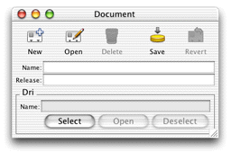

Problem: You need to provide a form window for a particular task so a user can insert new records into a table.
Solution: Use the controller factory to get a form controller for a particular entity.
Were you to implement this feature without using the controller factory or the rule system, you could spend a good hour in Interface Builder building the interface, connecting the controller, and then writing code to invoke the interface. But by using the rule system and the controller factory, a single method invocation does all of this for you.
In a client-side view class (not a model class or a controller
class), add the import statement for com.webobjects.eogeneration.client.
This package contains the controller factory. Then, in the action
method that triggers the selection, add this invocation on the controller factory:
EOControllerFactory.sharedControllerFactory().insertWithEntityName("Document");
This method simply takes the name of an entity in the enterprise object model group of your application. It results in a form window like that shown in Figure 9-2.
Figure 9-2 Form window from controller factory
